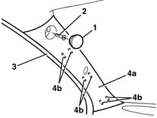

7040H30 front pillar trim - r r
- Path
- Procedures > 70 FITTINGS > 7040 BODYSHELL INTERIOR TRIMS AND FITTINGS > 7040H roof panel lining > 7040H30 front pillar trim - r r
- Kind
- repair procedure (removal / refitting; the operation number is the code)
- Applies to
- all engines; all production periods
- Interactive page
- https://sloeber94.github.io/elrnDB-lYpsln/en/#/2429593
Applies to: all engines; all production periods
 Removing
Removing
 Refitting
Refitting1. Release the cap.
2. Undo the bolt.
3. Remove the perimetral seal on the door frame near the front pillar trim.
4. Remove the pillar trim (4a) releasing the inner retainers (4b).

Applies to: all engines; all production periods
Refitting
RemovingCheck that the trim is not damaged and that the inner retainers are intact.
Engage the pillar trim on the inner retainers.
Fit the sealing strip around the door compartment.
Tighten the bolt and fit the cap.
Topics that link to this page (9)
- 5570T26 aerial for car radio - r+r
- 5580C50 (HEAD- BAG MODULE ) (one), left or right - R.R.
- 7030B47 GUIDE device for sliding roof movement control cables - R.R .
- 7030B48 FIXED REAR TRANSPARENT section of sliding roof - R.R .
- 7030B50 sun roof guide , one , lh or rh - r r
- 7030B70 sun-roof control switch - r+r
- 7035A18 windscreen glass r r including cleaning of housing
- 7040H10 roof panel lining - r r
- 7040H16 roof panel lining - r r